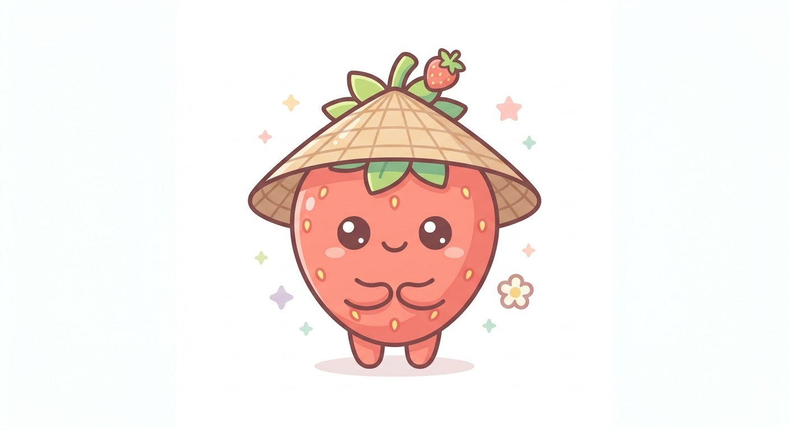

2026年10月06日
👶 4ヶ月のゴちゃんが寝た！音を立てずに忍び足で動く限界ミッション
今日の出来事
生後4ヶ月になった娘のゴちゃん（Gô）。抱っこでゆらゆら揺らして、ようやく…ようやく寝てくれた！！
ここからの我が家はまさに『音を立てたら即終了』の緊張感あふれる限界ミッション状態突入。
「ゴちゃん、いま寝てる？」と奥さんに小声で確認しながら、絶対に起こさないように全神経を集中。床のギシギシ音すら出さないように忍び足でゆっくり移動する……。ここでちょっとでも音を立てて起きちゃったらマジでヤバい（笑）。子育て中のパパママなら絶対共感してくれるはず！

🍓 いちごちゃん（ヒソヒソ声）
「しーっ！🤫 ゴちゃんがスヤスヤ寝てるよ！足音を立てずに『Đi nhẹ nhàng thôi』で移動しようね！」
🇻🇳 今日のメインフレーズ（我が家の緊急リアル会話）
Gô đang ngủ hả?
ゴちゃんは今寝てる？
Gô＝ゴちゃん ／ đang＝〜している（進行形） ／ ngủ＝寝る ／ hả＝〜なの？（南部でよく使う確認）
Đừng làm thức giấc!
起こさないで！
đừng＝〜しないで ／ làm＝〜させる ／ thức giấc＝目を覚ます

🍓 ちびいちごちゃん
「床のギシギシ音を出したら一発アウト！忍び足だよ〜！」
Đi nhẹ nhàng thôi, kẻo thức bây giờ!
そっと動いて、起きちゃうとヤバいから！
đi＝動く・歩く ／ nhẹ nhàng＝静かに・そっと ／ thôi＝〜してね ／ kẻo＝〜すると大変だから ／ thức＝起きる ／ bây giờ＝今
↕︎ 対比で覚える！赤ちゃんの状態表現
Ngủ （寝る）
↕︎
Thức （起きる・起きている）
Yên tĩnh （静か）
↕︎
Ồn ào （うるさい・騒がしい）
📚 関連単語（全単語音声付き）
👶 赤ちゃん・睡眠に関する単語
em bé — 赤ちゃん
ngủ — 寝る
thức giấc — 目を覚ます、起きる